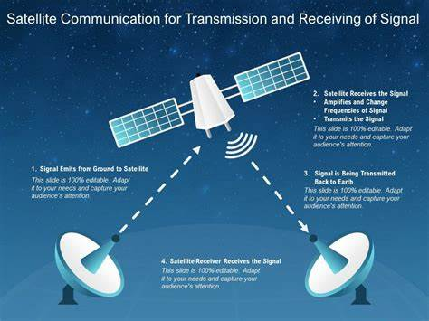
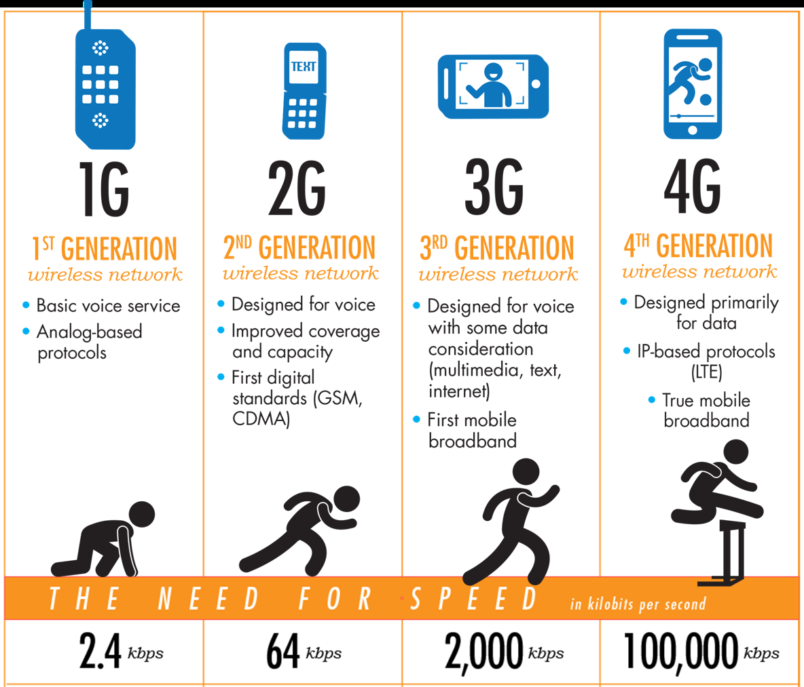
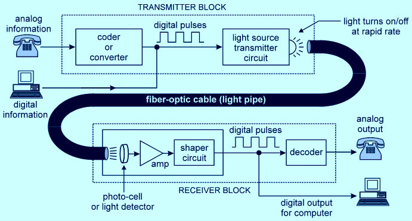

19 Communications
Communications
Human beings have used different methods of long-distance communications of which the telegraph and the telephone were important. The telegraph was instrumental in the colonisation of the American West. During the early and mid-twentieth century, the American Telegraph and Telephone Company (AT&T) enjoyed a monopoly over the U.S.A.’s telephone industry. In fact, the telephone became a critical factor in the urbanisation of America. Firms centralised their functioning at city headquarters and located their branch offices in smaller towns. Even today, the telephone is the most commonly used mode. In developing countries, the use of cell phones, made possible by satellites, is important for rural connectivity.
Satellite Communication
Satellite communication involves using satellites in Earth’s orbit to relay signals between different locations on the ground.
This form of communication is highly effective for long-distance and remote-area connectivity.
How it Works:
Ground Stations (also called Earth Stations) transmit signals to satellites.
Satellites amplify these signals and relay them back to another ground station or to a vast area.

Signals can be used for television broadcasts, phone calls, and internet services.
Types of Satellites:
Geostationary Satellites (GEO) : Orbit at 35,786 km above the equator and appear
stationary from Earth. Used for TV and weather forecasting. Medium Earth Orbit Satellites (MEO): Orbit at altitudes between 2,000 and 35,786 km. Used for navigation and GPS. Low Earth Orbit Satellites (LEO): Orbit closer to Earth, between 500-2,000 km. Used for high-speed internet and Earth observation.
Applications:
Direct-to-Home (DTH) Broadcasting : Satellite TV.
GPS Navigation: Positioning and navigation for transport, military, and personal devices. Remote Communication: Enables phone and internet services in remote regions.
Internet Communication
The Internet is a global network that connects millions of computers, allowing data and communication services to be shared widely. It includes various protocols and infrastructure for worldwide connectivity.
Key Components:
Internet Protocol (IP) : The fundamental protocol that routes data packets across
networks. Transmission Control Protocol (TCP):
Works with IP to ensure reliable data transmission. Domain Name System (DNS): Converts user-friendly website names (like google.com) into IP addresses. Fiber Optic Cables: Primary physical medium for internet data transfer, offering high speeds and large bandwidth.
Types of Internet Connections:
Broadband : Includes DSL, fibre, and cable, providing high-speed internet to homes and
businesses. Wireless (Wi-Fi): Uses radio waves to connect devices to the internet over short distances. Mobile Internet: Delivered via cellular networks (like 4G and 5G) to mobile devices. Satellite Internet: Useful for remote areas lacking traditional infrastructure.
Emerging Technologies:
5G Networks : Offer faster data speeds, lower latency, and more connectivity for Io T
devices. Fiber-to-the-Home (FTTH): Direct fibre connection to homes for faster internet. Starlink and Similar LEO Satellite Networks: Provide global internet, particularly in remote areas.
Applications:
Social Media, Communication, and Content Streaming : Platforms like Whats App,
Facebook, and Netflix rely on high-speed internet. E-Commerce: Online shopping, banking, and digital transactions. Remote Work and Education: Video conferencing, e-learning platforms.
Mobile Communication
Mobile communication relies on cellular networks to facilitate wireless communication, including voice calls, text messaging, and internet data services.

Cellular Generations:
2G : Basic voice and SMS.
3G: Internet access and multimedia messaging. 4G (LTE): Faster data transfer speeds, enabling video calls and mobile gaming. 5G: High-speed, low-latency internet, supporting Io T and smart city applications.
Infrastructure:
Cell Towers : Base stations for cellular signals.
Core Network: Manages connections, data processing, and routing.
Applications:
Voice and Video Calls : Using cellular networks and Vo IP (like Whats App).
Internet of Things (Io T): 5G enables a vast network of connected devices, such as smart home gadgets. Mobile Banking and Digital Payments: Facilitates online transactions and financial services through apps.
Radio Communication
Radio communication uses radio waves for transmitting audio signals over long distances, making it a widely used form of wireless communication.
Types:
AM/FM Radio : Used for broadcast radio.
Shortwave Radio: Can transmit signals across continents by bouncing waves off the ionosphere. Citizen Band (CB) Radio: Used for personal and emergency communication. Walkie-Talkies: Short-distance two-way communication devices.
Applications:
Broadcasting : AM/FM stations for news, music, and talk shows.
Public Services: Police, military, and rescue operations. Amateur Radio: Hobbyist communication and emergency use.
Optical Fiber Communication

Fibre optic communication uses light to transmit data at high speeds over long distances, offering much faster speeds than traditional copper wires.
How it Works:
Light signals are transmitted through thin glass or plastic fibres. Data can travel up to several kilometres without losing signal quality. Uses Total Internal Reflection, where light continuously reflects within the fibre core.
Advantages:
High Bandwidth : Enables massive data transfer with minimal delay.
Low Signal Degradation: Ideal for long-distance communication. Immunity to Electromagnetic Interference: Less interference compared to copper wires.
Applications:
Internet Backbones : Core infrastructure for ISPs.
Undersea Cables: Provide internet connectivity across continents. Data Centers and High-Speed Networks: Used in corporate networks for fast data handling.
Bluetooth and Wi-Fi
Both Bluetooth and Wi-Fi are wireless communication standards primarily used for short-range communication.
Bluetooth:
Ideal for short-range, low-power applications. Used to connect devices like headphones, speakers, and wearables.
Wi-Fi:
Provides higher data rates for internet connectivity over a limited area (up to 100 meters). Used widely in homes, offices, and public spaces for internet access.
Applications:
Bluetooth : Wireless headphones, Io T devices, and personal device communication.
Wi-Fi: Internet access for devices in homes, offices, and public places.
Undersea Cables
Undersea cables, or submarine communication cables, are laid on the ocean floor to connect countries across continents. They form the backbone of the global internet.
How They Work:
Cables are made of fibre optics, and wrapped in layers of protection to prevent damage from water and marine life. Typically laid by specialized ships that deploy them across the ocean floor.
Applications:
Global Internet Connectivity : Carry 99% of international data, linking major internet
hubs worldwide. International Telecommunication: Support phone calls, video conferencing, and data exchange between countries.
Key Government Initiatives in Communication in India
Digital India Program
Objective: To transform India into a digitally empowered society and knowledge economy.
Key Components:
Digital Infrastructure as a Utility for Every Citizen: Provides universal digital identity, mobile phone, and bank account access. Governance and Services on Demand: Enabling digital delivery of government services to citizens. Digital Literacy:
Initiatives like Pradhan Mantri Gramin Digital Saksharta Abhiyan (PMGDISHA) aim to make rural households digitally literate.
Highlights:
Increased focus on e-governance with online portals like UMANG, Digi Locker, and My Gov. Promoting digital payments and reducing the digital divide between urban and rural areas. Boosts internet penetration by expanding broadband and mobile network connectivity across India.
Bharat Net
Objective: To provide high-speed broadband connectivity to rural areas by connecting all 2.5 lakh Gram Panchayats in India.
Implementation:
Bharat Net is executed in two phases: Phase I: Connects 1 lakh Gram Panchayats via optical fibre. Phase II: Connect an additional 1.5 lakh Gram Panchayats. Includes the use of fibre optic cables for faster data transfer, and Wi-Fi hotspots in villages for better access.
Progress:
Largest rural connectivity project globally, aiming to bridge the urban-rural digital divide. Bharat Net now supports Wi-Fi services, digital classrooms, and telemedicine in many Gram Panchayats.
National Optical Fibre Network (NOFN)
Objective: To create an optical fibre network across rural India.
Scope:
Covers all 2.5 lakh Gram Panchayats with a robust optical fibre network, facilitating high-speed internet access. Now integrated into Bharat Net as its core infrastructure component.
Benefits:
Expands rural access to e-services such as e-health, e-education, and e-agriculture. Lowers communication costs and improves digital infrastructure in rural India.
National Broadband Mission
Objective: To fast-track internet connectivity across India with a target of providing broadband access to all villages by 2022.
Key Initiatives:
Lays emphasis on setting up infrastructure-sharing policies to reduce costs. Focuses on increasing tower density to 1 per 1,000 people and adding fibre optic cables across the country. Aims to deploy more than 5 million kilometres of fiber optic cable to improve connectivity and reach even remote locations.
Targets: Ensure universal and affordable broadband services for all. Create a robust digital communications infrastructure, supporting 5G rollout and future technologies.
PM WANI (Prime Minister Wi-Fi Access Network Interface )
Objective: To expand Wi-Fi networks by providing free and public Wi-Fi services across the country.
How it Works:
Local shops, businesses, and small vendors can provide Wi-Fi services as Public Data Office Aggregators (PDOAs). Enables anyone to access Wi-Fi through a simple mobile application, without needing a SIM card.
Impact:
Helps connect unserved and underserved areas, particularly useful in crowded and remote regions. Provides an affordable alternative for internet access, supporting the vision of Digital India.
C-DOT (Centre for Development of Telematics) Initiatives
Objective: To develop indigenous telecom technologies for rural and remote connectivity.
Projects:
GPON (Gigabit Passive Optical Network): Provides high-speed internet services over optical fibers, used in Bharat Net. Wi DHWAN:
A wireless mesh network solution for areas where fibre installation is challenging.
Achievements:
Develops cost-effective solutions that improve rural connectivity and provide a backbone for 4G and 5G infrastructure. Plays a critical role in the Atmanirbhar Bharat (self-reliant India) mission by reducing dependency on foreign technology.